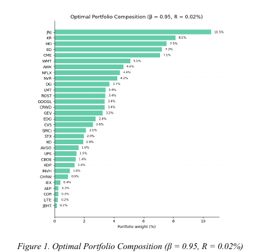
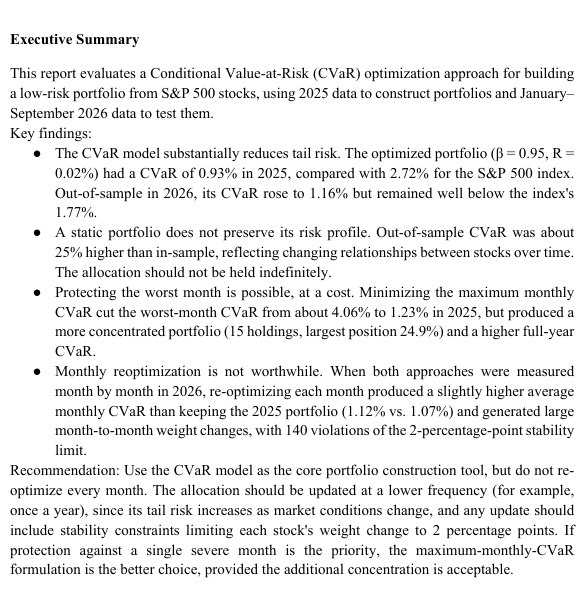

The problem
Traditional Value-at-Risk summarizes a loss threshold but can be difficult to optimize directly. This project used Conditional Value-at-Risk (CVaR), or Expected Shortfall, to construct a low-risk portfolio under a minimum expected-return constraint and then evaluate whether the optimized risk profile remained stable in a later market period.

Approach
The workflow downloaded adjusted-close data for the S&P 500, retained 498 stocks with complete histories across the training and evaluation windows, calculated daily returns, and formulated the CVaR problem as a linear program in Gurobi. The model selected portfolio weights subject to full-investment, non-negativity, and minimum-return constraints.
Validation & sensitivity
The portfolio was optimized using 2025 data and evaluated on 2026 data rather than judged only in sample. The analysis also tested different confidence levels, a worst-month CVaR objective, monthly reoptimization, and portfolio-stability constraints.

Results
At β = 0.95, the optimized portfolio had 0.93% in-sample CVaR versus 2.72% for the S&P 500. Out of sample, portfolio CVaR increased to 1.16% but remained below the index's 1.77%. Monthly reoptimization did not improve average monthly CVaR and created substantial turnover, supporting a lower-frequency rebalancing recommendation.
Decision takeaway
The strongest result was not simply that optimization reduced modeled risk, but that the project tested whether the recommendation survived changing market conditions. The final recommendation was to use CVaR as a core portfolio-construction framework while updating at a lower frequency and adding stability constraints when rebalancing.